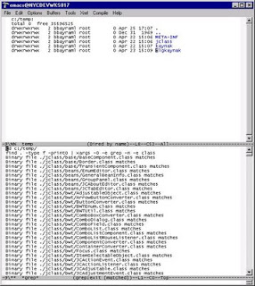

Grep + Cygwin + Emacs ile Dosya İçinde Kelime Arama
Birçok dosya içinde, belli bir metni aramak için, Unix üzerinde
find . -name '*.java' -exec grep -n 'aranankelime' \;
.. gibi bir ifade kullabiliyoruz. Windows üzerinde de bazı görsel seçenekler mevcut.
Programcıların ellerin sürekli klavye üzerinde olarak kodlaması daha isabetli olduğu için, metin arama gibi monoton işlerin Emacs aracılığı ile 'komut satırından' işlemiz daha isabetli olabilir. Hattâ, bulunan sonuçların Emacs üzerinden 'ziyaret edilebilir' bir liste halinde gösterilmesi güzel olur.
Not: Unix üzerinde Emacs kullanlar için değişiklik yapmaya gerek yok. Bu kullanıcı arkadaşlarımız "ESC x grep-find" komutu ile, metin aramayı derhal başlatabilirler. Bu yazımız, Windows NT üzerinde Emacs kullanıcıları için, ek uzatmaları anlatmak içindir.
Önce, evvelki yazılarda bahsettiğimiz Cygwin ürününü indirmeniz gerekiyor. Cygwin, bildiğimiz gibi Unix komut satır özelliklerini Windows'a taşıyor.
Cygwin kurulduktan sonra, Emacs ile bağını oluşturmak için şu eklentiyi kurmamız gerekecek. Bu dosyayı C:/SizinEmacsDizini/site-lisp dizini altına bırakabilirsiniz.
Bu yapıldıktan sonra, Emacs'e grep-find komutunu cygwin üzerinden işletmesini bildirmek için, .emacs ayartanım dosyasında şu ibareleri ekleyin.
(setenv "PATH" (concat "c:/cygwin/bin;" (getenv "PATH")))
(setq exec-path (cons "c:/cygwin/bin/" exec-path))
(require 'cygwin-mount)
(cygwin-mount-activate)
Ek olarak grep-find komutunu, meselâ Control-c Control-g ikilisine bağlamak için aşağıdaki ayarları yapın.
(global-set-key "\C-c\C-g" 'grep-find)
Evet. Artık Emacs'i tekrar başlattıktan sonra, metinyazar programını terketmeden istediğiniz arama işlemini yapabilirsiniz. Ikidebir fare ile oraya buraya tıklamaya gerek yok! Örnek bir çıktıyı aşağıda görüyoruz.
